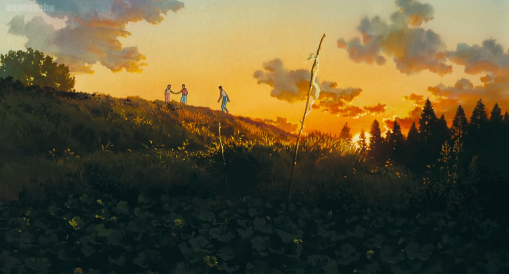
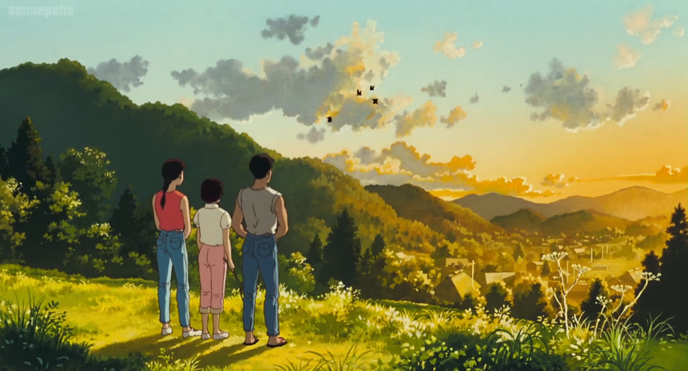

Only Yesterday
Taeko Okajima, a 27-year-old independent woman from Tokyo, seeks a break from city life by visiting her family in the countryside to assist with the harvest. On the train, she reminisces about her schoolgirl days during puberty, almost reliving her childhood. Upon arrival, she befriends a young farmer named Toshio, and during her stay, she forms deep connections with family and friends while exploring the contrasts between urban and rural life, including the challenges and joys of farming. Nostalgic and bittersweet, Omoide Poroporo follows Taeko's journey as she reconciles her childhood dreams with her present reality.
omo
| Japanese Name | おもひでぽろぽろ |
| Director | Isao Takahata |
| Producer | Toshio Suzuki |
| Release date | July 20, 1991 |
| Genre | Drama |
| Romance | |
| Slice of Life | |
| Status | Released |
| Duration | 118 minutes |
